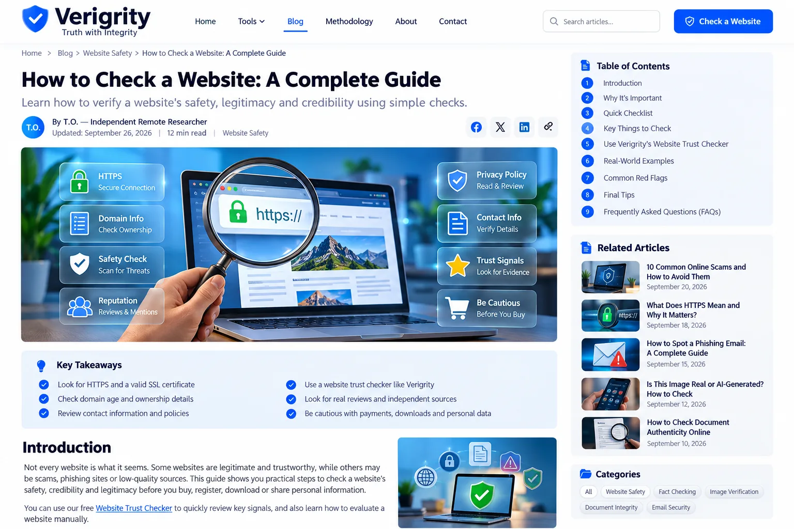

Enter the address
Paste the website address you want to review. The tool normalizes the URL and identifies basic domain information available in the browser.
VERIGRITY SCORE · FREE WEBSITE TRUST TOOL
Truth with Integrity
Use Verigrity to review visible trust signals on a website before you buy, register, download, or share information.
Check a Website FreeNo account required. Verigrity does not guarantee that a website is safe or legitimate.
Example only — not a real scan. A score summarizes observable signals; it is not a guarantee of safety or legitimacy.
VERIGRITY SCORE
Enter a website URL to get a free Verigrity Score, typically in about 5 seconds. No signup, no paywall, and no built-in usage cap.
Designed for a Verigrity Score in about 5 seconds. Actual response time depends on the website, network, DNS, and hosting availability.
Strong visible signals
This example demonstrates the report layout. A real result is generated after you submit a website URL.
Optional email updates about new scam-checking guides and verification resources. No spam.
By subscribing, you agree to receive Verigrity updates. You can unsubscribe at any time. See our Privacy Policy.
HOW IT WORKS
Verigrity is designed to help visitors slow down and inspect a website instead of treating a single automated score as a verdict.
Paste the website address you want to review. The tool normalizes the URL and identifies basic domain information available in the browser.
Check HTTPS, URL structure, domain characteristics and practical transparency questions such as whether contact and policy information are available.
Use the report as a starting point. Confirm the company, payment destination, contact details, reviews, and claims using independent sources.
LEARN
Our guides explain practical ways to inspect websites, links, privacy information, online businesses and common warning signs.
A practical checklist for evaluating a new website without relying on a single automated score.
GUIDELearn which visible signals matter and which common signals can be misleading.
SECURITYUnderstand the difference between encrypted connections and proof that a business is legitimate.
SAFETYPractical URL inspection habits for messages, emails and social media.
FAQ
Yes. The core Verigrity verification tools are free to use without a subscription, account requirement, or paywall. Verigrity does not impose an artificial per-user scan quota; availability can still depend on the hosting provider and normal anti-abuse infrastructure.
No. The report is not a security certification or guarantee. A legitimate-looking site can still be compromised, misleading, or unsuitable for a particular transaction.
The current browser-based demo does not send your URL to a Verigrity server. Any future server-side features will have their own privacy disclosures before they are introduced.
You can use it as one research step. For important decisions, independently verify the business identity, registration, contact information, payment destination and relevant claims.
POPULAR GUIDES
Practical evergreen guides for safer browsing and better online decisions.
A practical process for researching an unfamiliar website.
GUIDEWarning signs to investigate without relying on a single score.
SECURITYUnderstand what the padlock means and what it does not mean.
SAFETYHow to inspect a QR destination before sharing sensitive information.

VERIFICATION TOOLKIT
Verify sources, claims, images, documents and email authentication with free research tools.